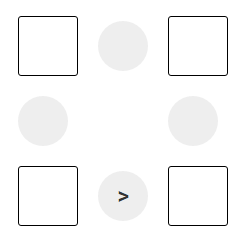
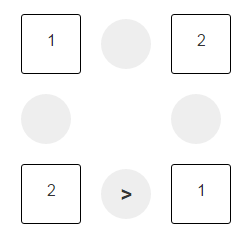
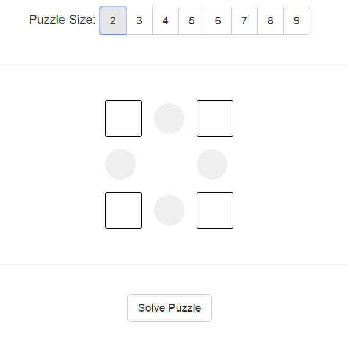

Mainarizumu Puzzle Solver
Summary
While on the JOCO cruise, I was introduced to the puzzle Mainarizumu (zumu) ; which is a Sudoku like game that differs from Sudoku in that there are constraints on some of the squares. This can best be explained with a small example puzzle:
In this puzzle, the greater than sign indicated that the lower left box, is greater than the lower right box. Given that constraint and that each column and row must be unique and between 1 and 2 we get the solution:

As the cruised progressed, I learned that the hack-a-thon team was working toward building a solver for this puzzle, and solving puzzles on the computer is always a ton of fun, so I picked up my trusty python constraint solver and went to solving the puzzle.
The program is really two separate parts; the first part is the solver, and the second part is the GUI that allows you to input the puzzle, and get answers back. The GUI is webpage with a bunch of javascript, and the back end is a flask server accepting connections, calling the solver, and returning the results back to the page.
The GUI
The GUI allows you to pick the puzzle size, select your constraints, and then solve the puzzle. After you click solve, you get back one or more solutions for the puzzle, which you can then scroll through.
The Solver
The solver was written using the python-constraint package and is pretty straight forward if you look at the code . (I think I spent more time working on the GUI than the solver.) Mostly I just setup all the constraints of the puzzle, and then had the solver go at it. The only thing that tripped me up on the solver was passing variables into the lambda constraint, and this was solved via:1 | problem.addConstraint( lambda a,b,c=c[2]: abs(a-b) == c , c[1] ) |
Using the Solver
The solver can be used to both solve and build puzzles. To use it, clone the repo, (I should have broken out it's own repo, but oh well.) Install the dependencies with pip , run python main.py (using python 2.x) and then connect to http://localhost:5002Links
puzzle
publish